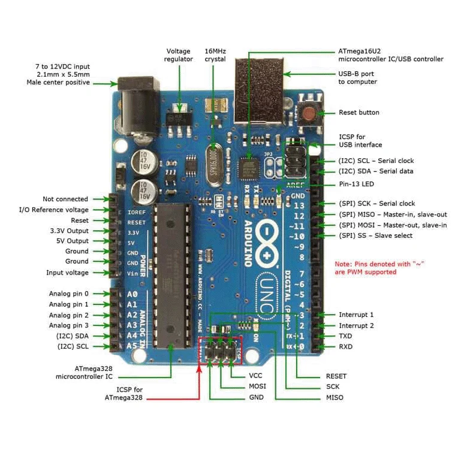

🤖 Arduino Introduction
Arduino is an open-source hardware and software platform for building digital devices. The Arduino Uno uses the ATmega328P microcontroller running at 16 MHz with 2 KB RAM and 32 KB flash.
Arduino Uno is a microcontroller — all components (CPU, RAM, Flash, I/O) are on a single chip. No OS needed. Runs a single dedicated program.
Applications
- Home automation & smart systems
- Robotics & motor control
- IoT & environmental monitoring (with WiFi shield)
- Security systems, weather monitoring, smart agriculture
📸 Arduino Uno Board Diagram

A4 = SDA (I2C Data for OLED) | A5 = SCL (I2C Clock for OLED)
A0–A5 = Analog input (for MQ-2 AO pin) | D0(RX)/D1(TX) = UART Serial
D13 = Built-in LED | D3,5,6,9,10,11 = PWM pins (marked with ~)
📌 Pin Overview
| Pin Type | Pins | Voltage | Function |
|---|---|---|---|
| Digital I/O | D0–D13 | HIGH=5V, LOW=0V | Digital input or output — reads/writes HIGH or LOW only |
| Analog Input | A0–A5 | 0–5V range | 10-bit ADC (values 0–1023). Use analogRead() for sensors like MQ-2. |
| UART TX | Pin 1 (TX) | Digital | Transmit serial data → connects to RX of another device |
| UART RX | Pin 0 (RX) | Digital | Receive serial data → connects to TX of another device |
| PWM (~) | 3,5,6,9,10,11 | 0–255 | Pulse Width Modulation — simulate analog output (motor, LED brightness) |
| I2C SDA | A4 | Digital | I2C data line — used by OLED, I2C sensors |
| I2C SCL | A5 | Digital | I2C clock line — used by OLED, I2C sensors |
| Power | 5V, 3.3V, GND | — | Supply voltage for sensors. MQ-2 uses 5V. Most sensors use GND. |
⚠️ UART Cross-Connection: Arduino's TX pin 1 connects to RX of another device. Arduino's RX pin 0 connects to TX of another device. They must be crossed!
⚙️ setup() and loop() — THE Most Important Functions
No other code structure will work. These two functions are the skeleton of every sketch.
- Called once when the Arduino powers on or is reset
- Use it to: configure pin modes, start serial, initialize components
- Think of it as "pre-flight checks" before the main program
- Runs continuously after
setup()completes - This is where your main program logic lives
- Repeats as long as the Arduino is powered
- Used to: read sensors, control outputs, make decisions
🔑 Key Functions Deep Dive — High Exam Priority
These are the most commonly tested functions. Know what each does, its syntax, and example.
1. digitalWrite(pin, value) — Output to a pin
Sets a digital pin to either HIGH (5V) or LOW (0V). Used to turn on/off LEDs, relays, buzzers, etc. The pin must first be set as OUTPUT using pinMode().
2. digitalRead(pin) — Read a digital signal
Reads the state of a digital pin — returns either HIGH (5V/1) or LOW (0V/0). Used to read buttons, switch states, or digital sensor outputs (like MQ-2 DO pin).
3. analogRead(pin) — Read an analog sensor value
Reads the analog voltage on a pin (A0–A5) and converts it to a number between 0 and 1023 (10-bit ADC). 0 = 0V, 1023 = 5V. Used to read the MQ-2 AO pin for gas concentration.
4. pinMode(pin, mode) — Configure a pin
Sets a pin as either INPUT (to read a signal) or OUTPUT (to write/drive a signal). Must be called in setup() before using digitalWrite() or digitalRead().
5. delay(ms) — Pause the program
📊 Function Comparison Table — Memorize This!
| Function | Direction | Returns | Pin Type | Use Case |
|---|---|---|---|---|
| digitalWrite(pin, HIGH/LOW) | → Output | Nothing | Digital | Turn LED/relay ON/OFF |
| digitalRead(pin) | ← Input | HIGH or LOW | Digital | Read button, MQ-2 DO |
| analogRead(pin) | ← Input | 0–1023 | Analog (A0–A5) | Read MQ-2 AO, potentiometer |
| analogWrite(pin, val) | → Output | Nothing | PWM (~) pins | LED brightness, motor speed |
| pinMode(pin, mode) | Config | Nothing | Any | Set up pin before using it |
| delay(ms) | Timing | Nothing | — | Wait between operations |
| Serial.begin(baud) | Init | Nothing | — | Start serial in setup() |
| Serial.println(data) | → PC | Nothing | — | Print to Serial Monitor |
INPUT_PULLUP — The Inverted Logic!
When you use INPUT_PULLUP, the internal 50kΩ resistor pulls the pin to 5V by default.
• Button NOT pressed → pin reads HIGH
• Button PRESSED → pin reads LOW (because it's connected to GND)
This is the OPPOSITE of what you might expect!
📡 Serial Communication
Serial.begin(9600) — Initializes serial communication at 9600 baud (bits/second). Must be called in setup(). Opens communication channel between Arduino and the computer's Serial Monitor.
When Arduino connects to another serial device:
Arduino TX (Pin 1) → Device's RX pin
Arduino RX (Pin 0) → Device's TX pin
In Proteus simulation: Connect Arduino RX to Virtual Terminal's TXD.
💨 MQ-2 Gas Sensor — Pin by Pin
The MQ-2 is a Metal Oxide Semiconductor (MOS) gas sensor. It can detect LPG, Methane, CO, Alcohol, Smoke, H2, Propane — but cannot identify which gas is present. Range: 200–10,000 ppm.
MQ-2 Sensor Pin Diagram
| Pin | Name | Description | Connect To | Use |
|---|---|---|---|---|
| VCC | Power | 5V power supply (±0.1%) | Arduino 5V | Powers the sensor heater element |
| GND | Ground | 0V reference | Arduino GND | Completes the circuit |
| AO | Analog Output | Voltage proportional to gas ppm (0V=clean, 5V=max gas) | Arduino A0 | analogRead(A0) → 0–1023 value |
| DO | Digital Output | HIGH/LOW based on threshold (potentiometer-set) | Arduino D2 | digitalRead(2) → HIGH or LOW |
Two Modes of Reading MQ-2
📊 Analog Mode (AO pin)
Use analogRead(A0) → returns 0–1023.
0 = clean air (0V), 1023 = maximum gas concentration (5V).
Use for precise ppm calculations.
🔲 Digital Mode (DO pin)
Use digitalRead(2) → returns HIGH or LOW.
LOW = gas exceeds threshold (alert!)
HIGH = gas below threshold (safe).
Threshold set by blue potentiometer on sensor.
MQ-2 requires at least 30 minutes (ideally 1 hour) warm-up for accurate readings. In code: add delay(20000) in setup() as minimum. The sensor has a small heating coil that must reach operating temperature.
MQ-2 Full Code Example
🖥️ OLED Display (SSD1306)
The SSD1306 128×64 OLED works via I2C protocol. I2C uses only 2 wires (SDA + SCL) to communicate, making it very efficient. The OLED address is usually 0x3C.
OLED Wiring to Arduino
Required Libraries (install from Library Manager)
- Adafruit_SSD1306.h — main OLED driver
- Adafruit_GFX.h — graphics primitives
- Wire.h — I2C communication (built-in)
Go to: File → Examples → Wire → i2c_scanner. Upload and open Serial Monitor. The address (0x3C or 0x3D) will be printed. Use this address in your OLED code.
🔌 Full System Wiring
💻 LED Blink Code Examples
Basic LED Blink (Classic)
Modified: LED blink 3s ON, 2s OFF
Modified: Blink twice then pause
Button controlling LED (with INPUT_PULLUP)
🧠 Quick Quiz
digitalWrite(13, HIGH) do on Arduino Uno?